Abstract
Autonomous robots rely on light detection and ranging (LiDAR) techniques to solve simultaneous localization and mapping (SLAM) problems. Interestingly, recent research has shown that LiDAR systems are vulnerable to attacks such as spoofing, point-cloud manipulation, and adversarial disruption.
Although prior work has demonstrated physical attacks against commercial vehicles and learning-based pipelines, little attention has been paid to vulnerabilities in Robot Operating System (ROS)-based deployments. However, these systems support numerous industrial, research, and academic robotics platforms.
Hence, this work investigates the security of LiDAR-driven SLAM solutions in a modern ROS2 environment.
This work presents a novel hardware- and system-aware technique, called PULSER, to remotely distort a robot’s perceived environment. PULSER leverages a network-level spoofing attack to intercept and override the robot’s LiDAR topic in ROS2’s middleware. By injecting structured distortions into the laser scan stream, PULSER-derived attacks can bias scan matching, corrupt the internal pose estimate, and induce persistent map deformation. Experiments on both simulated and physical platforms demonstrate that even low-magnitude range manipulations via PULSER produce 2-5% localization drift and 5-10m structural errors in an occupancy map. These findings reveal that, despite their widespread use, ROS-based SLAM pipelines remain highly susceptible to remote sensor manipulation attacks via cyberphysical techniques and require stronger multi-layer protections.
The code and artifacts for this work are available at https://github.com/SPIRE-GMU/PULSER for reproducible research.
Index Terms— Autonomous mobile robots, Simultaneous Localization and Mapping (SLAM), Light detection and ranging (LiDAR), Spoofing Attacks, Robot Operating System (ROS).
I. Introduction
Autonomous mobile robots heavily rely on simultaneous localization and mapping (SLAM) to navigate unknown environments [1], [2]. Light detection and ranging (LiDAR)-based SLAM provides robust geometric perception and accurate localization, even when visual or inertial sensors fail. However, recent research demonstrates that these systems are vulnerable to adversarial manipulation of sensor data, which can degrade mapping accuracy and pose estimation [3], [4], [5], [6], [7].
Prior work on SLAM security falls into two fundamentally different categories. The first category is physical sensor-level spoofing in which LiDAR measurements are manipulated as they are captured. For example, Fukanaga et al. show that external laser spoofing can introduce false LiDAR returns that gradually degrade localization and mapping accuracy [3]. More recently, SLAMSpoof demonstrates that carefully placed physical spoofing, guided by scan-matching analysis, can cause large localization errors in real-world systems [8].
The second targets the perception pipeline, crafting adversarial sensor data that exploits how SLAM systems interpret measurements. For example, Slack uses learning-based point injections to subtly modify LiDAR scans while preserving a realistic appearance, leading to significant mapping errors [4].
The Adversary on the Road (AoR) attack also shows that by subtly introducing adversarial patches, one can similarly manipulate perceived features to disrupt visual SLAM without obvious visual artifacts [5].
These studies demonstrate that even minimal, well-placed perturbations can cascade through SLAM’s estimation algorithms, producing large-scale errors in trajectory and map consistency. However, prior work often overlooks an important deployment reality: LiDAR-based SLAM systems are typically implemented within a robotic operating system. For example, in practice, popular frameworks such as Robot Operating System (ROS) and its current version ROS2 [9], provide a middleware that manages sensor data exchange, timing, and coordination between perception and control components in modern robotic platforms. As a result, the behavior of SLAM algorithms is tightly connected to ROS mechanisms. Ignoring these hardware- and system-level factors can limit the realism of attack models and leave important vulnerabilities in practical deployments unexplored.
To address these issues, this paper highlights the need to study LiDAR spoofing attacks that operate within the constraints of the ROS2 system. While prior research has demonstrated that LiDAR spoofing can disrupt SLAM, it rarely accounts for ROS2-specific factors such as message timing, topic semantics, and communication protocols. As a result, many spoofing techniques are difficult to deploy on real robots, filtered by the middleware, or fail to propagate consistently through the SLAM pipeline. Addressing this gap is critical for understanding how adversarial manipulations can persist in realistic ROS2 deployments and meaningfully impact SLAM performance.
Hence, this work develops precise manipulation of LiDAR measurements using statistical beam adjustment and a temporal modeling-based spoofing technique. Rather than only identifying unauthenticated ROS2 publishing as a vulnerability, this work demonstrates that adversarial manipulation of LiDAR data streams can bias SLAM state estimation while remaining temporally and statistically consistent with expected sensor behavior. The key contributions of this work are: C1.Timing-aware exploitation of ROS2 LiDAR streams. We show that compromising a ROS2-based SLAM system does not require overwhelming the LiDAR topic or injecting clearly anomalous measurements. By learning the natural cadence of the LiDAR stream and releasing manipulated scans that remain temporally consistent with expected sensor behavior, one can induce adversarial measurements to the SLAM backend without triggering frame rejection or synchronization errors. C2.Statistics-preserving LiDAR beam manipulation.We also introduce a statistical beam adjustment technique that modifies LiDAR ranges using scan history to maintain realistic per-beam distributions while introducing a controlled geometric bias. This approach preserves the statistical characteristics of sensor measurements, allowing manipulated scans to remain consistent with typical distribution and threshold-based validation checks while influencing scan matching and pose estimation. C3.LiDAR manipulation framework.We present an attack framework based on precise manipulation of LiDAR measurements using statistical beam adjustment and temporal modeling (nicknamed PULSER). Unlike naive high-rate injection attacks, PULSER operates using subtle perturbations that remain consistent with both sensor timings and measurement statistics, enabling stealthy manipulation of LiDAR-driven SLAM pipelines without modifying the SLAM software stack. C4.Demonstration of cumulative SLAM estimation bias. We also conducted experiments on both simulated and physical platforms running ROS2 Humble [9]. The experiments demonstrate that small range perturbations can accumulate over time to bias scan matching, corrupt the internal pose estimate, and introduce persistent structural errors in the generated map and navigation planning. We demonstrate the effectiveness of PULSER on multiple SLAM solutions, such as KartoSLAM[10], Cartographer[11], and GMapping[12], and evaluate the attack on Secure ROS (SROS) [13] settings. The code and artifacts for this work are available at https://github.com/SPIRE-GMU/PULSER for reproducible research.
II. Background
A. Notations
In this work, for mathematical notations, (unless otherwise defined) upper case letters, such as \(X\), denote random variables and their lower-case representation, i.e., \(x\), denotes a value that the variable might assume. Subscripts, such as \(x_i\), represent the index for a value of a random variable, and \( : \) denotes a range. For example, \(X_{1:n}\) stands for the sequence of values \(\{x_1, x_2, \ldots, x_n\}\) for \(X\). Sets are denoted with calligraphic fonts, i.e., \(\mathcal{S}\).
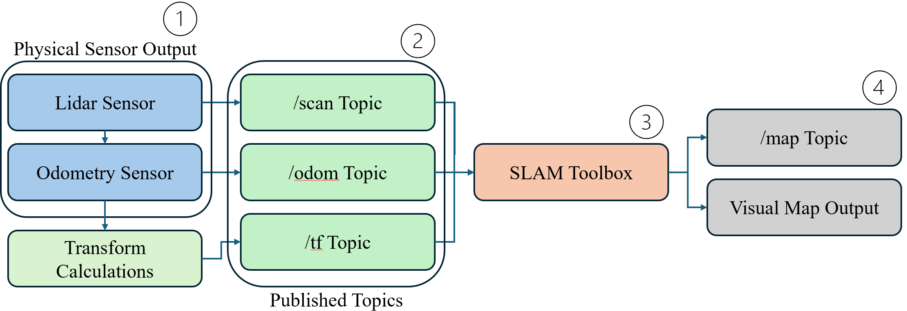
B. Robot Operating System
Robot Operating System is a set of libraries and tools to help develop applications for robot systems [14]. The current generation of ROS, ROS2, has a SLAM Toolbox available through the Advanced Package Tool (apt) library. This SLAM Toolbox comes with an implementation of Graph-Based SLAM named KartoSLAM [15]. In addition, ROS2 allows the installation of drivers to interface with LiDAR sensors connected to the robot on which ROS2 is installed. The availability of both of these features results in ROS2 being a suitable middleware for those aiming to implement Graph-Based SLAM with a LiDAR sensor. The logical flow of SLAM is shown in Fig. 1.
C. Data Distribution Service
For the SLAM Toolbox to receive data from the LiDAR sensor through ROS2, it must participate in a communication service known as a Data Distribution Service (DDS) [16]. In a DDS, systems that aim to communicate information to each other are regarded as nodes. For the LiDAR node to send data to the SLAM Toolbox node, it has to send messages to a topic. A topic in a DDS is an abstracted channel of communication that sets a certain structure for the messages that pass through it; a message is a transmitted piece of data that conforms to the structure of the topic. Then, the SLAM Toolbox node has to be subscribed to that same topic, where it listens for messages passing through that specific topic. The default topic for LiDAR scan data is/scan. All communications through the DDS protocol happen through the network.
However, in regular DDS, without security enabled, any malicious attacker can connect to any topic and intercept or spoof published messages. This allows attackers to spoof LiDAR scan data to the SLAM Toolbox to make arbitrary point changes, corrupting the resulting map.
D. Simultaneous Localization and Mapping
Simultaneous localization and mapping is a fundamental problem in robotics where a robot must build a map of an unknown environment while simultaneously determining its position and following action within that map [17], [18].
This problem is crucial because localization and mapping are essential for path planning, obstacle avoidance, and task execution. The main goal of SLAM is to estimate the posterior probability of the robot’s trajectory and the map given all sensor and control inputs. For example, assume \(X_{0:n}\) is the sequence of robot poses (positions and orientations), \(M\) is the map of the environment, \(Z_{1:n}\) are the sensor measurements, and \(U_{1:n}\) are the control inputs (e.g., odometry or wheel encoder readings) up to step \(n\). SLAM estimates the posterior probability of the robot’s trajectory and the map [19], i.e.,:
This expression captures the robot’s belief about its trajectory and environment, given all past observations and actions.
However, directly computing this posterior is intractable due to the high dimensionality and nonlinear dependencies between poses, measurements, and map features [20]. While the SLAM problem can be solved recursively using filters such as the Extended Kalman Filter or particle filters, this work focuses on the graph-based formulation, which expresses all motion and measurement relationships as a global optimization problem. Graph-Based SLAM (GraphSLAM) [21] reformulates the full SLAM problem by estimating the entire trajectory \(X_{0:t}\) and the map \(M\) as a graph optimization problem [22]. Each node in the graph represents a robot pose, and each edge represents a spatial constraint derived from motion (odometry) or sensor measurements [23]. Edges in this graph act like “springs” connecting nodes; they encode soft spatial relationships. The goal of GraphSLAM is to find the configuration of nodes that best satisfies all these constraints simultaneously. Formally, GraphSLAM seeks the maximum posteriori estimate of the trajectory and map given all observations and control inputs [23]:
Assuming Gaussian noise for both motion and measurement models, this estimation problem of Eqn. 2 becomes equivalent to a nonlinear least-squares optimization:
Here, \(r_k\) denotes the residual error (difference between the predicted and observed values) for the \(k\)-th constraint, and \(W_k\) is the information matrix, representing the inverse of the measurement covariance. Therefore, Eqn. 3 becomes a minimization problem of the cost function:
This cost function represents the total weighted residual across all motion and measurement constraints. Two types of residuals define the structure of the SLAM graph:
The function \(g()\) is the motion model, which predicts the robot’s next pose given its previous pose and control input (e.g., odometry). The function \(h()\) is the observation model, predicting what the robot’s sensor should perceive at a given pose if the environment contains feature \(m_j\). The error terms \(r_i\) quantify the mismatch between the predicted and actual data from these models. Because both models, i.e., \(g()\) and \(h()\), are nonlinear, GraphSLAM uses a first-order linearization around the current estimate, yielding a locally linear approximation of the residual:
where \(J_k = \frac{\partial r_k}{\partial X_k}\) is the Jacobian matrix, describing how small changes in the state variables affect the residuals, and \(\Omega\) is the incremental update applied to the state estimation.
This approximation transforms the nonlinear least-squares problem into a locally linear one, allowing efficient iterative optimization. Substituting this into the cost function leads to the standard equations:
Here, \(H\) is the Hessian matrix, which encodes how strongly different variables are connected, and \(b\) is the gradient vector, indicating the direction in which the estimate should move to reduce the residuals. Solving for \(\Omega\) yields the incremental correction to the state, which is applied iteratively:
where \(\oplus\) denotes the composition of the current state with the incremental update. This process repeats until convergence, meaning the graph configuration becomes consistent with all observed constraints. Since each edge connects only a few nodes (e.g., consecutive poses or a pose–landmark pair), the resulting system is inherently sparse, enabling efficient computation even for long robot trajectories. GraphSLAM thus provides a framework for globally consistent mapping and localization by jointly optimizing all past measurements while maintaining computational scalability.
E. LiDAR-based SLAM Vulnerabilities
LiDAR-based SLAM has become a core component for autonomous systems [24]. It provides reliable 3D geometry and enables accurate localization even when visual or inertial sensors fail [25], [26], [27], [28], [29], [30], [31]. However, recent research has increasingly shown that these systems possess structural weaknesses that make them susceptible to point-level disruption [3], [32], [33], [34], [35], [36], [37]. On the other hand, scan-matching algorithms assume that LiDAR
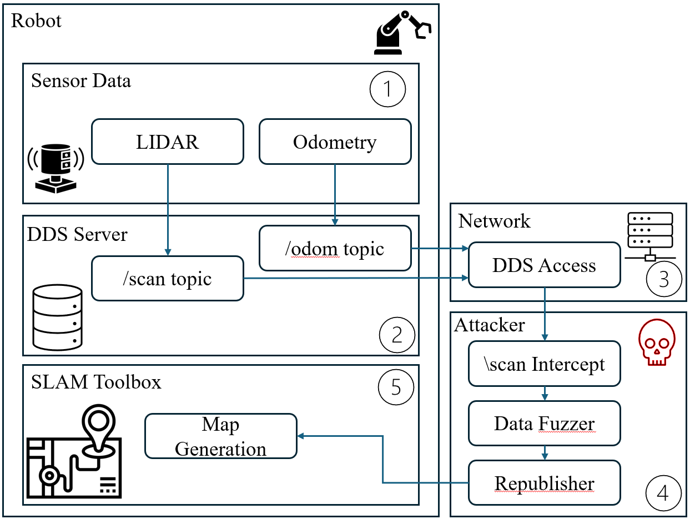
returns are both physically valid and spatially consistent across consecutive frames, but this assumption does not hold with adversarial manipulation [4], [6], [38], [39], [40], [41], [42], [43]. Previous work demonstrated that even simple physical spoofing can exploit these assumptions and cause significant SLAM degradation without requiring full sensor takeover or synchronization precision [44]. Additionally, these works establish that SLAM’s reliance on geometric consistency exposes it to small, well-placed distortions in scans. [3], [32], [44], [45]. Additional details on this are given in Section VII.
III. Attack Model
A. Attack Scenario
Our attack injects crafted adversarial data directly into the data stream of the LiDAR. This will corrupt the sensor measurement \(z_i\) as well as the residual \(r_i^{\mathrm{meas}}\) in Eqn. 5. Since the residuals are corrupted, the linearization process of Eqn. 6 is compromised causing the gradient vector \(b\) to point in a different direction. This causes GraphSLAM to compute incorrect \(\Omega\) in Eqn. 7. This will ultimately result in the GraphSLAM optimizer function \(C_{\mathrm{GraphSLAM}}\) corrupting the robot pose (Eqn. 9) or introducing distorted landmarks (Eqn. 3).
B. Threat Model
The attacker is assumed to possess realistic capabilities to launch an attack on ROS2. They operate from a device on the same wireless network, allowing them to observe and publish ROS2 messages. The attacker initially lacks knowledge of the robot’s ROS Domain ID or the specific configuration of the middleware. Along with this, the attacker has not initially compromised any nodes on the wireless network. The generic attack setting does not have DDS-Security [46] or SROS2 enabled, and we evaluated their impact later in VI-4. These constraints represent a practical scenario in which a nearby adversary only has network access and must probe the ROS2 environment to identify active topics and communication parameters before executing the attack.
C. Target Platform
The target platform for the attack is a TurtleBot3 equipped with a 2D LiDAR sensor that provides distance measurements across a planar field of view. The system runs on ROS2 Humble Hawksbill [9] and uses the supported DDS vendor eProsima Fast DDS. For localization and mapping, the robot employs SLAM Toolbox, a widely used ROS2 package that implements Karto-SLAM to generate an incremental map and estimate the robot’s pose. We also evaluate the attack on other similar algorithms such as Cartographer and GMapping.
IV. PULSER: Precise Manipulation of LiDAR Measurements Using Statistical Beam Adjustment and Temporal Modeling
The attack framework, PULSER, incrementally corrupts SLAM pose estimation (as discussed in III-A) by combining timing-aware injection with statistically-biased LiDAR manipulation. A logical flow of the attack is outlined in Fig. 2.
A. Brute-Forcing ROS Domain ID and Middleware
The first phase of PULSER identifies the robot’s ROS Domain ID and ROS2 middleware (RMW) implementation, both of which are required before interacting with ROS2 topics. To automate this discovery, we developed a script that iterates through all valid Domain IDs and RMW combinations.
For each pair, the script retrieves the topic list and checks for non-default topics—such as/scan or /tf. Because LiDAR and SLAM communication occurs over non-default topics, their presence reliably indicates the correct Domain ID and middleware configuration.
B. Direct Injection into/scan
Before examining broader manipulation strategies within PULSER, we tested whether an attacker could overwrite the robot’s primary LiDAR stream by publishing falsified messages directly on the /scan topic. This requires precise timing due to ROS2’s synchronization constraints, i.e., SLAM rejects LaserScan messages whose timestamps are not aligned with the corresponding/tfframes.
Consequently, successful injection requires racing the real LiDAR by publishing at a much higher frequency than the physical sensor can produce. This will result in total control over \(z_i\) in Eqn. 5. For example, the TurtleBot3’s LDS-02 LiDAR produces measurements at a native rate of \(f_{\mathrm{LiDAR}} \approx 5\) Hz corresponding to a nominal sampling period of \(\approx 0.20s\). Distortions begin to appear around \(50\)Hz, although acceptance of the scan frames at this rate is low. More consistent influence emerges only at higher rates; around \(100\)Hz. The injected scans then reliably outpace the \(5\)Hz LiDAR and dominate the SLAM pipeline. Below this threshold, forged scans are typically ignored by the timestamp-based filter or overshadowed by the optimizer function \(C_{\mathrm{GraphSLAM}}\) in Eqn 3, producing little meaningful effect on the resulting map. Hence, for a naive attack, the attacker injects falsified LaserScan messages at a significantly higher rate, typically in the \(50-100\)Hz range. Despite its effectiveness, this naive approach introduced two major drawbacks. First, SLAM Toolbox frequently emitted dropped-frame warnings, as the backend is optimized for \(5\)Hz input but was forced to ingest more than \(50\)Hz of attacker generated scans. Second, publishing at \(50-100\)Hz produced an obvious increase in network traffic, making the attack easily detectable since a massive increase in errors with received sensor data is a standard indication of an attack [47]. These limitations motivated the development of the more covert, statistically grounded manipulation strategy presented next.
C. Improving the Naive Approach
To improve upon the naive approach, we examine the time constraints in the scan acceptance and statistical beam adjustment as given below. 1)Timing-Constrained Scan Injection for Pose Integration:Knowing that we cannot naively inject false data into the /scantopic with very high success rate, PULSER explicitly addresses the timing inconsistencies present in the previous approach using Algorithm 1. We first analyze the temporal characteristics of the LiDAR stream. We designate the first two incoming frames of the most recent five LiDAR frames exclusively for observation. During this initial phase, no timing manipulation is performed; instead, these frames are used to establish a baseline estimate of the sensor’s temporal behavior.
For each newly received scan, we compute the scan interval \(\Delta t_i\) from successive message arrival times. We restrict valid scan delays to the range
\(t_p\) and \(t_q\) provide the lower and upper bounds for the delay.
For example, in our TurtleBot based experiments, we set \(t_p = 0.1s\) and \(t_q = 0.4s\) that corresponds to realistic LiDAR operating frequencies. Using the valid timing information obtained from the initial observation frames, we estimate the scan period \(\tau_i\) at time step \(n\) using an exponential moving average (EMA),
where \(\alpha\) is a smoothing factor controlling the influence of recent timing measurements relative to the existing estimate.
a) Attack Outline
During an attack, \(\tau_i\) is learned by observing the timing of scans and becomes the baseline. An attacker injects a new scan only if the time since the previous scan is consistent i.e.,
Intuitively, the attacking node learns how fast the LiDAR normally operates by observing earlier scans and only forwards new scans when their timing appears consistent with this learned behavior.
2) Statistical Beam Adjustment to Bias Scan Matching
In addition to timing control, PULSER also modifies how LiDAR data is processed before being republished to the /scantopic by implementing Algorithm 2. Specifically, we examine the ranges from recent LiDAR frames and use these
values to construct a statistical baseline for each LiDAR beam corresponding to a fixed angular measurement in the scan. Assume each scan contains \(l\)-beams. Let \(S\) denote the set of recent valid scans. From this history, a per-beam baseline for the \(q\)th beam after acquiring \(i\) scans is computed as:
This median provides a robust estimate of the typical observed distance for beam \(q\), reducing the influence of transient outliers that may occur in individual scans. To characterize the natural variability of each measurement, the algorithm also computes the median absolute deviation (MAD),
Compared with variance-based statistics, MAD provides a robust estimate of beam variability in recent scans. Together, \(z^q_{(i+1)_{\mathrm{base}}}\) and \(\gamma_i\) form a per-beam statistical model describing the central tendency and dispersion of recent LiDAR observations. Using these statistics, the current range measurement \(\tilde{z}^q_{i+1}\) is pulled toward the historical baseline to reduce shortterm fluctuations relative to recent observations. The adjusted measurement is computed as
where \(p\) is a pull factor controlling the strength of the attraction toward the baseline. The remaining deviation relative to the baseline is bounded using the \(\gamma_i\), constraining \(z^q_i - z^q_{(i+1)_{\mathrm{base}}}\) within the natural variability observed in recent scans. This MAD-based limiting step prevents unusually large deviations from propagating into the modified scan while maintaining temporal consistency with prior observations. After the bounded smoothing step, the intermediate beam value \(z^q_{i+1}\) is scaled using a global multiplicative factor \(\beta\),
which introduces a consistent geometric bias across the scan. Because this scaling is applied uniformly to each beam after the temporal stabilization steps, it produces a low variance modification that remains consistent with the statistical structure of recent LiDAR observations. The resulting value is then constrained to lie within the physical sensing limits of the LiDAR. Specifically, the final adjusted beam value \(\tilde{z}^q_{i+1}\) is obtained by clipping the scaled measurements to the interval \([z_{\min}, z_{\max}]\), ensuring that the modified ranges remain physically plausible and compatible with downstream perception modules.
3) Design ofPULSER
Accumulation of Biased Updates and Persistent Map Deformation:PULSER combines the timing control of Algorithm 1 with the statistical beam adjustment detailed in Algorithm 2 to generate LiDAR scans that remain consistent with expected sensor behavior while introducing a controlled geometric bias. The timing model regulates when modified scans are republished using the learned scan period, ensuring injected data follows the normal LiDAR update rhythm and avoids irregular publication patterns. Concurrently, beam measurements are adjusted using statistics computed from recent valid scans. For each beam, a baseline and variability estimate are derived using the median and MAD. The current measurement is constrained toward this baseline and bounded within the observed variability before applying the global scaling factor \(\beta\) in Eqn.17, introducing small but consistent shifts across the scan. The modified scan is excluded from the historical window to prevent contamination of future statistics.
Although individual beam changes are small, the uniform scaling produces a coherent displacement across the scan.
From the perspective of the SLAM backend, these measurements remain statistically valid and therefore influence the residual term in the measurement constraint (Eqn. 5). During scan matching, the optimizer interprets this systematic shift as evidence that the robot pose must move to better align the scan with the map. Consequently, the incremental update \(\Omega\) computed in Eqn. 7 deviates from the correction that would be produced using unmodified measurements. Repeated incorporation of these updates gradually propagates error through the pose graph, resulting in persistent map deformation.
V. Results
To validate PULSER, we evaluated the attack in both physical and virtual environments. Table I summarizes the respective configurations, including hardware specifications, LiDAR model, SLAM parameters, and software environment.
| LiDAR Scanner | LDS-02 |
|---|---|
| Controller | OpenCR 1.0 32-bit ARM Cortex-M7 |
| Motor | 2x DYNAMIXEL Motor Model: XL430-W250-T |
| Battery | LiPo Battery 11.1 V , 1800 mAh |
| Raspberry Pi Board | Raspberry Pi model B+ Broadcom BCM2837B0, 1GB LPDDR2 SDRAM |
| Operating System | Ubuntu 22.04 |
| ROS2 Distribution | ROS2 Humble |
| Visualization Software | RViz |
| Simulation Software | Gazebo |
1) Parameter Selection
A controlled parameter sweep was conducted to evaluate the influence of the attack parameters on distortion and stability. Each experiment replayed an identical ROSBag to ensure deterministic input conditions. A raw baseline stream was recorded to establish ground truth, while a timing-only control stream was generated using the same temporal gating logic without beam manipulation. This control allows the isolation of beam-value manipulation effects from timing artifacts. The parameters were varied across the following ranges:
Each configuration was executed three times, resulting in 225 attack runs. Processed scans were matched to the baseline using exact timestamp alignment.
From our ablation study, we find that bias scale \(\beta\) is the dominant driver of distortion. Lower \(\beta\) values compress ranges more aggressively and produce larger deviations from the baseline scan, with the largest distortion observed at \(\beta = 0.85\). The pull factor \(p\) exhibits a monotonic relationship with distortion magnitude, where higher values amplify displacement from nominal measurements. In contrast, the responsiveness parameter \(\alpha\) has a weaker and non-monotonic influence, primarily affecting temporal responsiveness rather than distortion magnitude.
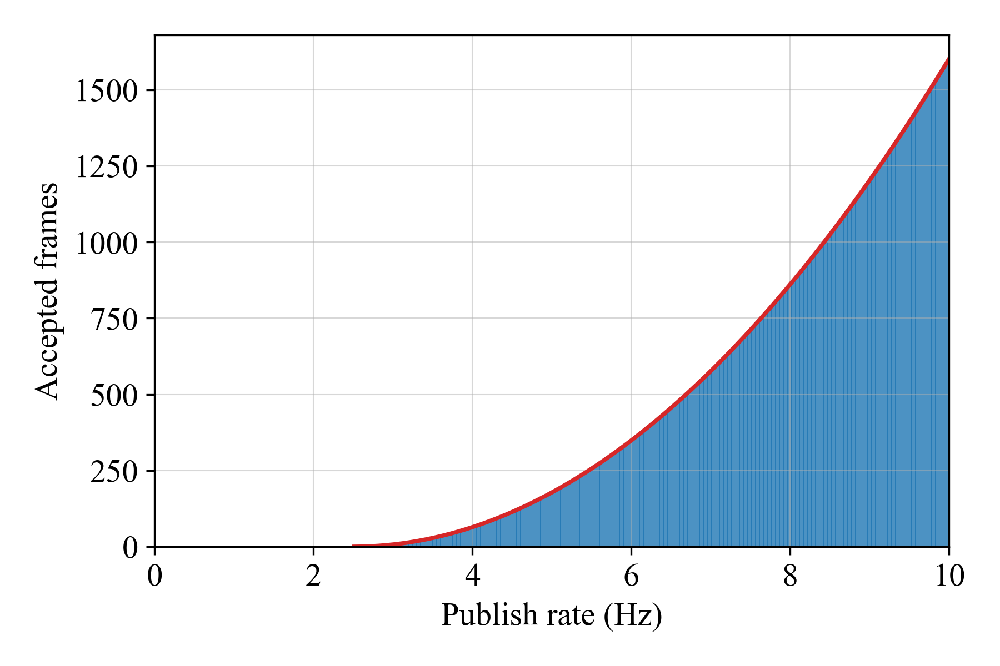
(a)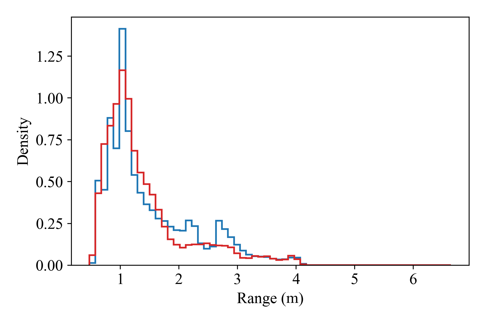
(b)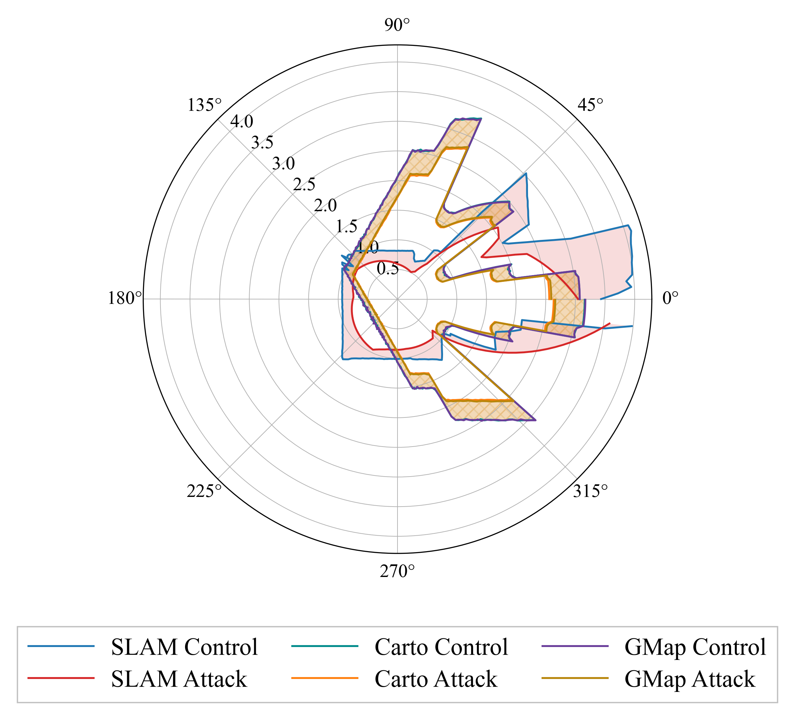
(c)Across all configurations, the signed bias remains consistently negative, indicating that manipulated ranges are systematically shortened relative to baseline measurements. Based on these results, the operating parameters were selected as \(\alpha = 0.2\), \(p = 0.8\), and \(\beta = 0.9\) in Eqn.16 and Eqn.17.
This configuration lies within a stable interior region of the parameter space, balancing consistent beam displacement with stable temporal behavior.
2) Biasing Scan Matching
We first evaluate PULSER’s ability to bias scan matching by influencing which LiDAR frames are incorporated into the SLAM backend. Fig. 3a shows the fraction of attacker-generated scans accepted by SLAM Toolbox as a function of the combined publish rate. Under naive high-frequency injection, acceptance remains limited due to internal frame dropping. However, once per-beam statistical manipulation is introduced, acceptance increases dramatically even at modest publish rates. This demonstrates that PULSER does not rely on overwhelming the system with volume, but instead exploits the backend’s implicit trust in structurally valid sensor data.
Importantly, the manipulated scans remain statistically indistinguishable from legitimate measurements. Fig. 3b confirms that the overall range distributions under attack closely align with the control scenario.
3) Corrupting the Internal Pose Estimate
By consistently biasing scan-to-scan alignment, PULSER causes fabricated structures, such as a virtual wall, to be treated as legitimate features as shown in Fig. 4. Since pose graph optimization prioritizes internal consistency in Eqn. 3, these false constraints are reinforced rather than rejected. Crucially, the SLAM backend continues to converge normally, which makes pose corruption especially difficult to detect, as the system exhibits no optimization failures or contradictory measurements.
4) Inducing Persistent Map Deformation
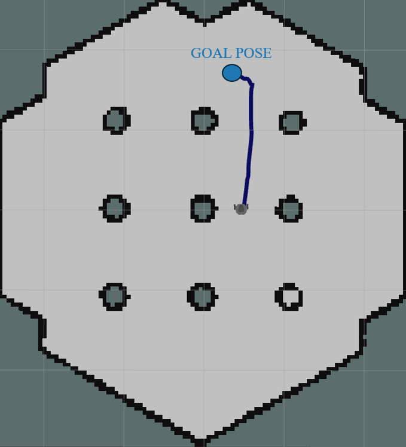
(a)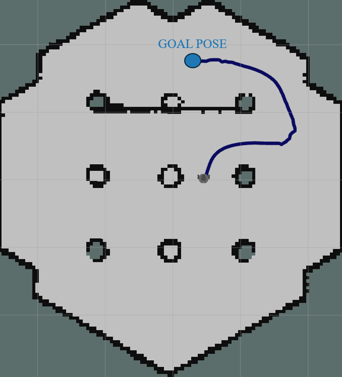
(b)The combined effects of biased scan matching and corrupted pose estimation ultimately manifest as persistent deformation of the reconstructed map. Fig. 5 highlights the consequences of PULSER: walls shift, geometry warps, and obstacle boundaries become internally consistent but globally incorrect. These deformations are not transient artifacts. Once incorporated, they persist even as new measurements arrive, because SLAM optimization assumes that prior observations were trustworthy and forces later data to conform to the attacker-induced geometry.
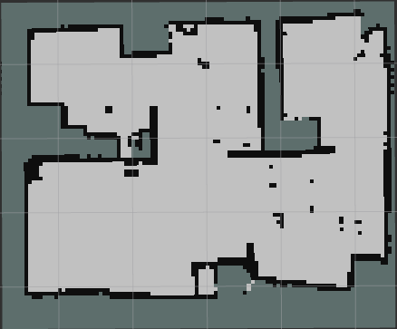
(a)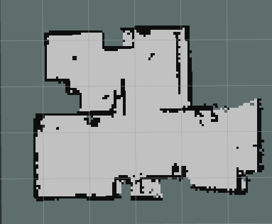
(b)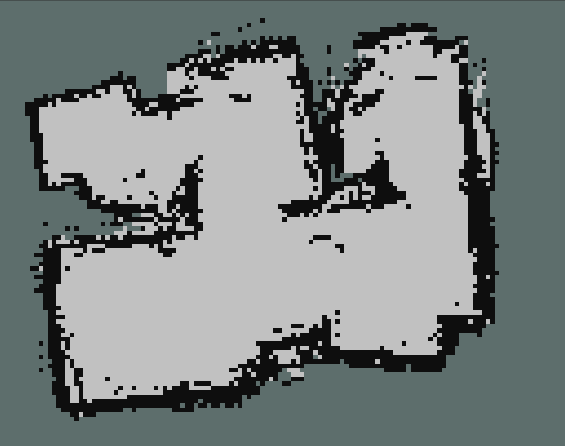
(c)| Frame ID | Beam ID | Absolute Difference (m) | Normal Frame Value (m) | Attacked Frame Value (m) |
|---|---|---|---|---|
| 75 | 39 | 2.640 | 3.236 | 0.596 |
| 72 | 39 | 2.688 | 3.235 | 0.597 |
| 50 | 38 | 2.582 | 3.296 | 0.714 |
| 69 | 39 | 2.573 | 3.168 | 0.595 |
Fig. 3c further reveals that these global distortions originate from subtle per-beam manipulations. In polar coordinates, the attacked ranges diverge only slightly from control measurements, yet these differences are sufficient to steer the SLAM solution over time. This is further broken down in Table II, which showcases the difference between the attacked value and the actual value. Since no abrupt anomalies or spectral artifacts are introduced, the robot continues to operate normally while its internal world model drifts steadily away from reality. This persistence and stealth make PULSER particularly insidious: the system remains navigable, stable, and apparently correct, even as its map becomes increasingly detached from the physical environment as shown in Fig. 5.
VI. Discussions
From our experiments, it is evident that SLAM Toolbox, as shipped with the latest version of ROS2, is vulnerable to PULSER. In this section, we further investigate the generality of PULSER by investigating its application in a broader setting with multiple sensor modalities and security solutions such as DDS-Security and SROS.
1) Generalization
We evaluated PULSER on additional SLAM backends, including Cartographer [11] and GMapping [12]. Despite architectural differences between these systems, our results show that PULSER remains effective as shown in Fig 3c. In Cartographer, small modifications to PULSER that gradually drift the timestamps of incoming LiDAR scans produced persistent map distortions. Applying the same modified script to GMapping also influenced the mapping process and introduced inconsistencies in the generated map, although the effect was less pronounced than in Cartographer and SLAM Toolbox. These results suggest that the vulnerability exploited by PULSER is not specific to a single SLAM backend but instead arises from the broader reliance on accurate LiDAR timestamps for pose prediction and scan alignment across SLAM systems.
2) Adverse network conditions
We evaluated PULSER under adverse network conditions to understand how the attack behaves under network strain. The attack was executed across progressively increasing delay and packet-loss levels and compared with a baseline run with no delay or loss. As shown in Fig. 6a, at 6000ms of delay less than 25% of the sent attack frames from PULSER are accepted by the SLAM algorithm. The attack continues to function reasonably well under packet loss up to about 50%, after which it fails (Fig. 6b).
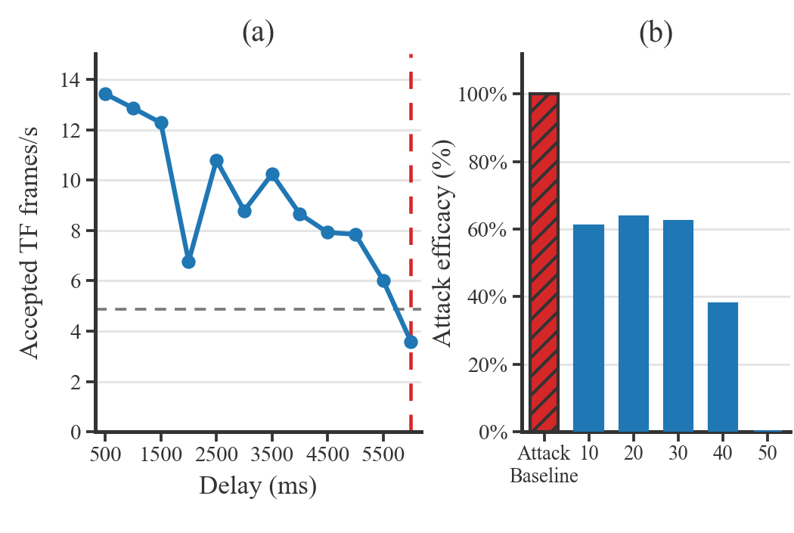
3) Sensor Modalities
Many SLAM systems fuse LiDAR with additional sensing modalities such as wheel odometry and employ cross-sensor consistency checks. In SLAM Toolbox, wheel odometry provides a motion prior, while LiDAR scan matching refines the robot pose and constructs the map.
However, cross-sensor checks based on wheel odometry do not mitigate the PULSER attack for two main reasons. 1) PULSER modifies LiDAR scans incrementally based on previously observed scans rather than introducing large instantaneous perturbations. Each injected scan remains geometrically consistent with the robot’s predicted motion, preventing large pose discrepancies that would trigger cross-sensor validation mechanisms. 2) When injecting fake obstacles, PULSER accounts for the robot’s current pose and odometry estimate. The injected obstacles are dynamically updated relative to the robot’s estimated trajectory, causing them to behave like legitimate environmental structures from the robot’s perspective. Consequently, the navigation stack treats them as real obstacles.
Fig. 4 illustrates this behavior during navigation. Under normal conditions (Fig. 4a), the planner produces a direct trajectory toward the goal. When PULSER injects a fake wall into the LiDAR scan (Fig. 4b), the planner generates an avoidance trajectory that routes around the injected obstacle, indicating that the manipulated structure is treated as a valid environmental feature.
These results show that the injected LiDAR structures remain consistent with the robot’s motion prior, preventing cross-sensor checks based on wheel odometry from detecting the manipulation. Similar observations have been reported in prior work, where carefully crafted LiDAR perturbations can influence scan matching even in systems that incorporate motion priors [8].
4) PULSER and SROS2
Secure ROS2 (SROS2) enables secure communication between the nodes in a ROS2 system. SROS2 provides all the features and tools within the ROS2 libraries that enable integration with DDS-Security, a specification that secures node communications by defining plugin implementations for: (1) authentication, (2) node access control, and (3) encryption. Theoretically, the encryption of all DDS messages in SROS2 should stop any attacker from intercepting and modifying LiDAR data the way PULSER is required to do.
However, SROS2 is notorious for its timing overhead [48].
Hence to find the effectiveness of PULSER, we extracted the timing overhead and throughput across shared topics for our environment with and without SROS enabled as shown in Fig. 7. The overhead imposed by SROS2 was large enough to introduce timestamp variance in the transform cache, and the input base_scan frames were not accepted by the navigation module. In our experimental setup of PULSER, implementing SROS2 made the SLAM Toolbox nonfunctional due to extreme lag in communication. Hence, we leave the effective use of SROS with SLAM Toolbox for future work.
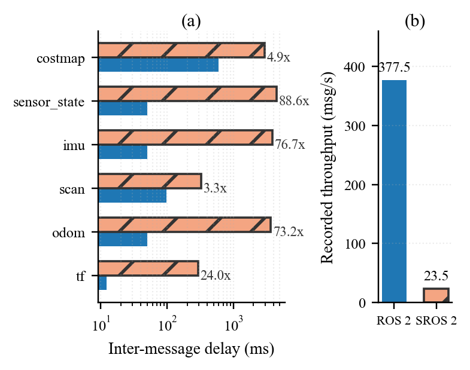
If the delays in SROS2 fall within the tolerances of PULSER, one would then consider the scenario where the attacker has initial access to a compromised, lower-privilege node on the same wireless network that does not have access to publish or subscribe to the /scan topic. Based on our experiments, we find that, to successfully escalate privileges and corrupt data, an attacker will need to modify PULSER by combining it with an already-existing privilege escalation attack documented with ROS2 [49]. Once the attacker gains control over the /scan topic through the privilege escalation attack, PULSER can proceed as normal and corrupt map data. Table III provides the configuration setups in SROS2 that would need to be enabled by an attacker to make PULSER viable.
| SROS2 Parameter | PULSER Viability |
|---|---|
| allow_unauthenticated_participants | ✓ |
| enable_join_access_control | ✓ |
| rtps_protection_kind | ✗ |
| discovery_protection_kind | ✓ |
| enable_write_access_control | ✓ |
| data_protection_kind | ✗ |
| liveliness_protection_kind | ✗ |
5) Mitigation Strategies
By preserving realistic per-beam statistics, PULSER evades common detection strategies based on outlier rejection, distributional drift, or threshold-based anomaly detection. Thus, scan matching is systematically biased toward attacker-injected data without triggering explicit rejection or warning signals, making this phase of the attack both efficient and stealthy. One mitigation strategy is enforcing strict middleware authentication and topic authorization within ROS2. As summarized in Table III, configurations that permit unauthenticated participants or relaxed access control policies enable malicious nodes to interact with the DDS network and publish manipulated data to critical topics such as/scan. Enforcing strict authentication and limiting publish permissions can therefore significantly reduce the attack surface.
Another potential mitigation is sensor-origin authentication, which ensures that LiDAR measurements originate from trusted hardware or verified driver processes, preventing forged sensor data from entering the SLAM pipeline. By cryptographically verifying the origin of the sensor messages, the SLAM pipeline can reject forged data even if an attack gains network access to the ROS2 system. Together with SROS2 protections summarized in Table III, these mechanisms provide a stronger foundation for preventing LiDAR data manipulation attacks such as PULSER.
VII. Related Works
A. LiDAR-based SLAM Vulnerabilities: Random Spoofing and
Adversarial Point-Cloud Manipulation
a) Random Spoofing Attacks on LiDAR Sensors
Random spoofing attacks exploit LiDAR vulnerabilities by injecting asynchronous laser pulses into the LiDAR’s field of view [3]. These pulses produce false points that the sensor interprets as legitimate returns, allowing attackers to create an arbitrary 3D structure in the scan [32], [24]. A key finding from this work is that modern LiDAR remains susceptible to spoofing that is not temporally aligned with the sensor’s output pattern, despite timing-randomization countermeasures. b) Learning-Based Adversarial Point-Cloud Manipulation (Slack):Recent work introduces learning-based adversarial point injection, most notably Slack [4]. Instead of random spoofing, Slack employs deep generative models to insert a small fraction that closely mimics natural LiDAR structure. Its pipeline reconstructs scans using an auto-encoder, identifies viable injection regions with a segmentation-aware mask, and preserves global scan statistics through contrastive objectives. Additional domain-adaptation techniques improve transferability from simulation to real-world datasets such as KITTI [4]. c) Impact on SLAM Accuracy and Stealth Characteristics:Although Slack injects only 0.07% – 0.14% new points per scan, these points introduce subtle geometric inconsistencies that propagate through scan matching and posegraph optimization[4], [27]. Experiments show a 5 to 10-fold increase in trajectory error, with some sequences drifting hundreds of meters despite minimal artifacts. Because the injected points preserve realistic statistical and structural properties, standard anomaly-detection methods fail to detect them [50].
Compared with random spoofing, learning-based injections achieve significantly greater stealth while exploiting the same geometric assumptions in SLAM [4].
d) Implications for LiDAR-based SLAM Security
Both random spoofing and adversarial point injection demonstrate that small distortions in LiDAR scans can significantly degrade SLAM performance. Errors introduced at the sensor level propagate through scan matching and pose-graph optimization, amplifying minor inconsistencies into large localization failures [3], [4]. These findings highlight the need to treat LiDAR input as a potential attack surface and to design perception pipelines resilient to spoofing and adversarial manipulation.
B. Cross-Modal Attacks on SLAM: Visual Adversarial Patches
and LiDAR Spoofing Recent work has also examined SLAM vulnerabilities across different sensing modalities. Attacks on both visual and LiDAR-based systems demonstrate that localized sensor manipulations can disrupt feature extraction or geometric consistency, ultimately degrading localization and mapping.
a) Visual Adversarial Patch Attacks on vSLAM (AoR)
Adversary on the Road (AoR) demonstrates adversarial patch attacks against visual SLAM [5]. Instead of altering sensor signals, AoR places optimized textures on roadside objects that appear benign to humans but interfere with feature detection and tracking. The attack uses a three-stage pipeline consisting of patch generation, environmental adaptation, and trajectoryaware placement to maximize disruption of pose estimation. b) Physically Realizable LiDAR Spoofing Attacks (SLAMSpoof):SLAMSpoof presents the first practical spoofing attack against LiDAR localization systems [8].
The attack injects precisely timed laser returns to distort scan geometry, targeting high-impact regions identified by a Scan Matching Vulnerability Score (SMVS). By maximizing scan-matching disruption while minimizing injected points, the attack remains difficult to detect.
c) Real-World Impact on LiDAR Localization Accuracy
Real-world experiments show that SLAMSpoof can induce position errors exceeding 4.2 meters across multiple localization algorithms, including KISS-ICP, A-LOAM, and hdl localization [8], [51]. Targeting high-SMVS regions produces significantly larger errors than random spoofing, highlighting the lack of mechanisms in many LiDAR pipelines to verify the spatial origin of measurements.
d) Implications for Cross-Modal SLAM Security
Together, AoR and SLAMSpoof demonstrate that SLAM pipelines are vulnerable to small, localized manipulations regardless of sensing modality [5], [8]. Whether through visualfeature disruption or geometric distortion of LiDAR scans, sensor-level attacks can propagate through pose estimation and graph optimization to cause large-scale navigation failures.
Effective defenses must therefore address vulnerabilities at the perception layer, where corrupted sensor data first enters the SLAM pipeline.
VIII. Conclusions and Future Work
This work demonstrates that timing-consistent manipulation of LiDAR data induces gradual localization drift and steady degradation in pose estimation. These errors accumulate over time and bias scan matching. Beyond degradation, the PULSER framework allows the SLAM process to hallucinate synthetic structures that persist as legitimate features in the global map.
These results highlight a systemic weakness in ROS2based SLAM deployments. When upstream data validation is minimal, the SLAM pipeline becomes vulnerable to lowmagnitude, statistically plausible manipulations that propagate through scan matching and pose-graph optimization. The resulting artifacts are internally consistent and persist over time to be reinforced by normal SLAM convergence behavior.
Mitigating this style of attack will require defenses beyond traditional outlier rejection. Some promising directions include (1) cross-sensor geometric consistency checks; (2) physicallayer authentication of LiDAR ranging signals; and (3) motionaware temporal validation.
IX. Acknowledgment
This material is based upon work partially supported by the National Science Foundation under grant #2245156 and #2523805, and Commonwealth Cyber Initiative grant N-2Q26- 007. Any opinions, findings, conclusions, or recommendations expressed in this material are those of the authors and do not necessarily reflect the views of the National Science Foundation.
References
- [1] C. Cadena, L. Carlone, H. Carrillo, Y . Latif, D. Scaramuzza, J. Neira, I. Reid, and J. J. Leonard, “Past, Present, and Future of Simultaneous Localization and Mapping: Toward the Robust-Perception Age,”IEEE Transactions on Robotics, vol. 32, no. 6, pp. 1309–1332, 2016.
- [2] M. Choi, J. Ryu, Y . Son, S. Cho, and J. Paek, “LiDAR-Based Localization for Autonomous Vehicles - Survey and Recent Trends,” in 2024 15th International Conference on Information and Communication Technology Convergence (ICTC 2024), 10 2024, pp. 456–460.
- [3] M. Fukunaga and T. Sugawara, “Random Spoofing Attack against LiDAR-Based Scan Matching SLAM,”VehicleSec2024, 2024.
- [4] P. Kumar, D. Vattikonda, K. Bhat, and P. Kalra, “Slack: Attacking Lidar-Based SLAM with Adversarial Point Injections,”2024 IEEE International Conference on Image Processing Challenges and Workshops (ICIPCW), pp. 4082–4088, 2024.
- [5] B. Chen, W. Wang, P. Sikorski, and T. Zhu, “Adversary is on the Road: Attacks on Visual{SLAM}using Unnoticeable Adversarial Patch,” in 33rd USENIX Security Symposium (USENIX Security 24), 2024, pp. 6345–6362.
- [6] J. Petit, B. Stottelaar, M. Fieri, and F. Kargl, “Remote Attacks on Automated Vehicles Sensors: Experiments on Camera and LiDAR,” Black Hat Europe, 2015.
- [7] H. Dong and T. D. Barfoot, “Lighting-Invariant Visual Odometry using Lidar Intensity Imagery and Pose Interpolation,” inInternational Symposium on Field and Service Robotics, 2012. [Online]. Available: https://api.semanticscholar.org/CorpusID:444865
- [8] R. Nagata, K. Koide, Y . Hayakawa, R. Suzuki, K. Ikeda, O. Sako, Q. A. Chen, T. Sato, and K. Yoshioka, “SLAMSpoof: Practical LiDAR Spoofing Attacks on Localization Systems Guided by Scan Matching Vulnerability Analysis,”arXiv preprint arXiv:2502.13641, 2025.
- [9] S. Macenski, T. Foote, B. Gerkey, C. Lalancette, and W. Woodall, “Robot Operating System 2: Design, architecture, and Uses in the Wild,” Science Robotics, vol. 7, no. 66, p. eabm6074, 2022. [Online]. Available: https://www.science.org/doi/abs/10.1126/scirobotics.abm6074
- [10] [Online]. Available: https://wiki.ros.org/slam karto
- [11] [Online]. Available: https://google-cartographer.readthedocs.io/en/latest/
- [12] B. Balasuriya, B. Chathuranga, B. Jayasundara, N. Napagoda, S. Kumarawadu, D. Chandima, and A. Jayasekara, “Outdoor robot navigation using Gmapping based SLAM Algorithm,” in2016 moratuwa engineering research conference (mercon). IEEE, 2016, pp. 403–408.
- [13] [Online]. Available: https://docs.ros.org/en/humble/Tutorials/Advanced/ Security/Introducing-ros2-security.html
- [14] 2025. [Online]. Available: https://ros.org/
- [15] S. Macenski and I. Jambrecic, “SLAM Toolbox: SLAM for the Dynamic World,”Journal of Open Source Software, vol. 6, no. 61, p. 2783, 2021. [Online]. Available: https://doi.org/10.21105/joss.02783
- [16] [Online]. Available: https://fast-dds.docs.eprosima.com/en/latest/
- [17] U. Frese, P. Larsson, and T. Duckett, “A Multilevel Relaxation Algorithm for Simultaneous Localization and Mapping,”IEEE Transactions on Robotics, vol. 21, no. 2, pp. 196–207, 2005.
- [18] J. Leonard, H. Durrant-Whyte, and I. Cox, “Dynamic Map Building for Autonomous Mobile Robot,” inEEE International Workshop on Intelligent Robots and Systems, Towards a New Frontier of Applications, 1990, pp. 89–96 vol.1.
- [19] H. Durrant-Whyte and T. Bailey, “Simultaneous Localisation and Mapping (SLAM): Part I The Essential Algorithms,” IEEE, pp. 99–110, 2006.
- [20] T. Bailey and H. Durrant-Whyte, “Simultaneous Localization and Mapping (SLAM): part II,”IEEE Robotics Automation Magazine, vol. 13, no. 3, pp. 108–117, 2006.
- [21] J. Bongard, “Probabilistic Robotics. Sebastian Thrun, Wolfram Burgard, and Dieter Fox.(2005, mit press.) 647 pages,” 2008.
- [22] S. Thrun and M. Montemerlo, “The Graph SLAM Algorithm with Applications to Large-Scale Mapping of Urban Structures,”The International Journal of Robotics Research, vol. 25, no. 5-6, pp. 403–429, 2006.
- [23] G. Grisetti, R. K ¨ummerle, C. Stachniss, and W. Burgard, “A Tutorial on Graph-Based SLAM,”IEEE Intelligent Transportation Systems Magazine, vol. 2, no. 4, pp. 31–43, 2010.
- [24] T. Sato, Y . Hayakawa, R. Suzuki, Y . Shiiki, K. Yoshioka, and Q. A. Chen, “LiDAR Spoofing Meets the New-Gen: Capability Improvements, Broken Assumptions, and New Attack Strategies,” inProceedings 2024 Network and Distributed System Security Symposium, ser. NDSS 2024. Internet Society, 2024. [Online]. Available: http://dx.doi.org/10.14722/ndss.2024.23350
- [25] S. Kohlbrecher, O. von Stryk, J. Meyer, and U. Klingauf, “A Flexible and Scalable SLAM System with Full 3D Motion Estimation,” 2011 IEEE International Symposium on Safety, Security, and Rescue Robotics, pp. 155–160, 2011. [Online]. Available: https://api.semanticscholar.org/CorpusID:14113246
- [26] T. Shan and B. Englot, “LeGO-LOAM: Lightweight and Ground- Optimized Lidar Odometry and Mapping on Variable Terrain,” 2018 IEEE/RSJ International Conference on Intelligent Robots and Systems (IROS), pp. 4758–4765, 2018. [Online]. Available: https://api.semanticscholar.org/CorpusID:53706363
- [27] W. Hess, D. Kohler, H. Rapp, and D. Andor, “Real-Time Loop Closure in 2D LiDAR SLAM,” in2016 IEEE International Conference on Robotics and Automation (ICRA), 2016, pp. 1271–1278.
- [28] J. Zhang and S. Singh, “LOAM : Lidar Odometry and Mapping in realtime,”Robotics: Science and Systems Conference (RSS), pp. 109–111, 01 2014.
- [29] C. Urmson, J. Anhalt, J. A. D. Bagnell, C. R. Baker, R. E. Bittner, J. M. Dolan, D. Duggins, D. Ferguson, T. Galatali, H. Geyer, M. Gittleman, S. Harbaugh, M. Hebert, T. Howard, A. Kelly, D. Kohanbash, M. Likhachev, N. Miller, K. Peterson, R. Rajkumar, P. Rybski, B. Salesky, S. Scherer, Y .-W. Seo, R. Simmons, S. Singh, J. M. Snider, A. T. Stentz, W. R. L. Whittaker, and J. Ziglar, “Tartan Racing: A Multi- Modal Approach to the DARPA Urban Challenge,” Carnegie Mellon University, Pittsburgh, PA, Tech. Rep., April 2007.
- [30] T. Shan, B. J. Englot, D. Meyers, W. Wang, C. Ratti, and D. Rus, “LIO-SAM: Tightly-coupled Lidar Inertial Odometry via Smoothing and Mapping,”CoRR, vol. abs/2007.00258, 2020. [Online]. Available: https://arxiv.org/abs/2007.00258
- [31] W. Xu, Y . Cai, D. He, J. Lin, and F. Zhang, “FAST-LIO2: Fast Direct LiDAR-Inertial Odometry,”IEEE Transactions on Robotics, vol. 38, no. 4, pp. 2053–2073, 2022.
- [32] K. Yoshida, M. Hojo, and T. Fujino, “Adversarial Scan Attack against Scan Matching Algorithm for Pose Estimation in LiDAR-Based SLAM,” IEEE, pp. 326–335, 2022.
- [33] M. Abdelfattah, K. Yuan, Z. J. Wang, and R. Ward, “Towards Universal Physical Attacks on Cascaded Camera-Lidar 3D Object Detection Models,”CoRR, vol. abs/2101.10747, 2021. [Online]. Available: https://arxiv.org/abs/2101.10747
- [34] J. Sun, Y . Cao, Q. A. Chen, and Z. M. Mao, “Towards Robust LiDAR-based Perception in Autonomous Driving: General Black-box Adversarial Sensor Attack and Countermeasures,” 2020. [Online]. Available: https://arxiv.org/abs/2006.16974
- [35] Y . Cao, C. Xiao, D. Yang, J. Fang, R. Yang, M. Liu, and B. Li, “Adversarial Objects Against LiDAR-Based Autonomous Driving Systems,”CoRR, vol. abs/1907.05418, 2019. [Online]. Available: http://arxiv.org/abs/1907.05418
- [36] Z. Jin, X. Ji, Y . Cheng, B. Yang, C. Yan, and W. Xu, “PLA-LiDAR: Physical Laser Attacks against LiDAR-based 3D Object Detection in Autonomous Vehicle,” in2023 IEEE Symposium on Security and Privacy (SP), 2023, pp. 1822–1839.
- [37] T. Sato, R. Suzuki, Y . Hayakawa, K. Ikeda, O. Sako, N. Rokuto, A. Chen, and K. Yoshioka, “Demo: Towards Practical LiDAR Spoofing Attack against Vehicles Driving at Cruising Speeds,” inSymposium on Vehicle Security and Privacy (VehicleSec) 2024, 01 2024.
- [38] S. B. Jakobsen, K. S. Knudsen, and B. Andersen, “Analysis of Sensor Attacks against Autonomous Vehicles,” pp. 131–139, 2023.
- [39] Y . Cao, C. Xiao, B. Cyr, Y . Zhou, W. Park, S. Rampazzi, Q. A. Chen, K. Fu, and Z. M. Mao, “Adversarial Sensor Attack on LiDAR-based Perception in Autonomous Driving,” inProceedings of the 2019 ACM SIGSAC Conference on Computer and Communications Security, ser. CCS ’19. New York, NY , USA: Association for Computing Machinery, 2019, p. 2267–2281. [Online]. Available: https://doi.org/10.1145/3319535.3339815
- [40] H. Shin, D. Kim, Y . Kwon, and Y . Kim, “Illusion and dazzle: Adversarial optical channel exploits against lidars for automotive applications,” in Workshop on Cryptographic Hardware and Embedded Systems, 08 2017, pp. 445–467.
- [41] Y . Cao, S. H. Bhupathiraju, P. Naghavi, T. Sugawara, Z. M. Mao, and S. Rampazzi, “You Can’t See Me: Physical Removal Attacks on LiDAR-based Autonomous Vehicles Driving Frameworks,” in32nd USENIX Security Symposium (USENIX Security 23). Anaheim, CA: USENIX Association, Aug. 2023, pp. 2993–3010. [Online]. Available: https://www.usenix.org/conference/usenixsecurity23/presentation/cao
- [42] C. Yan, “Can You Trust Autonomous Vehicles : Contactless Attacks against Sensors of Self-driving Vehicle,” in DEFCON 2024 Presentations, 2016. [Online]. Available: https://infocon.org/cons/DEF%20CON/DEF%20CON%2024/DEF% 20CON%2024%20presentations/DEF%20CON%2024%20-% 20Liu-Yan-Xu-Can-You-Trust-Autonomous-Vehicles-WP.pdf
- [43] Y . Xu, X. Han, G. Deng, J. Li, Y . Liu, and T. Zhang, “SoK: Rethinking Sensor Spoofing Attacks against Robotic Vehicles from a Systematic View,” 2023. [Online]. Available: https://arxiv.org/abs/2205.04662
- [44] B. Yang, T. M. T. Pham, and J. Yang, “Robustness of LiDAR-Based Pose Estimation: Evaluating and Improving Odometry and Localization Under Common Point Cloud Corruptions,” 2025. [Online]. Available: https://arxiv.org/abs/2409.10824
- [45] S. Bonnabel, M. Barczyk, and F. Goulette, “On The Covariance of ICP- Based Scan-Matching Techniques,” in2016 American Control Conference (ACC), 2016, pp. 5498–5503.
- [46] [Online]. Available: https://fast-dds.docs.eprosima.com/en/3.x/fastdds/ security/security.html
- [47] J. Park, R. Ivanov, J. Weimer, M. Pajic, and I. Lee, “Sensor Attack Detection in the Presence of Transient Faults,”Proceedings of the ACM/IEEE Sixth International Conference on Cyber-Physical Systems, 2015.
- [48] J. Kim, J. M. Smereka, C. Cheung, S. Nepal, and M. Grobler, “Security and Performance Considerations in ROS 2: A Balancing Act,”arXiv preprint arXiv:1809.09566, 2018.
- [49] L. Xia, X. Gao, and W. Shi. [Online]. Available: https://weisongshi. org/papers/xia25-ICRA.pdf
- [50] Y . Li and J. Ibanez-Guzman, “Lidar for Autonomous Driving: The Principles, Challenges, and Trends for Automotive Lidar and Perception Systems,”IEEE Signal Processing Magazine, vol. 37, no. 4, p. 50–61, Jul. 2020. [Online]. Available: http://dx.doi.org/10.1109/MSP.2020. 2973615
- [51] P. Dellenbach, J.-E. Deschaud, B. Jacquet, and F. Goulette, “CT-ICP: Real-time Elastic LiDAR Odometry with Loop Closure,” 2022. [Online]. Available: https://arxiv.org/abs/2109.12979
Artifacts
Citation
BibTeX
@inproceedings{schaefer2026lidar,
title = {LiDAR Spoofing for Compromising SLAM on ROS2 Using Statistical Beam Adjustment \& Temporal Modeling},
author = {Schaefer, Finn and Lam, Ryan and Kumar, Sidarth and Tram, Jimmy and Sharma, Neil and Arafin, Md Tanvir},
booktitle = {IEEE International Symposium on Hardware Oriented Security and Trust (HOST)},
year = {2026}
}